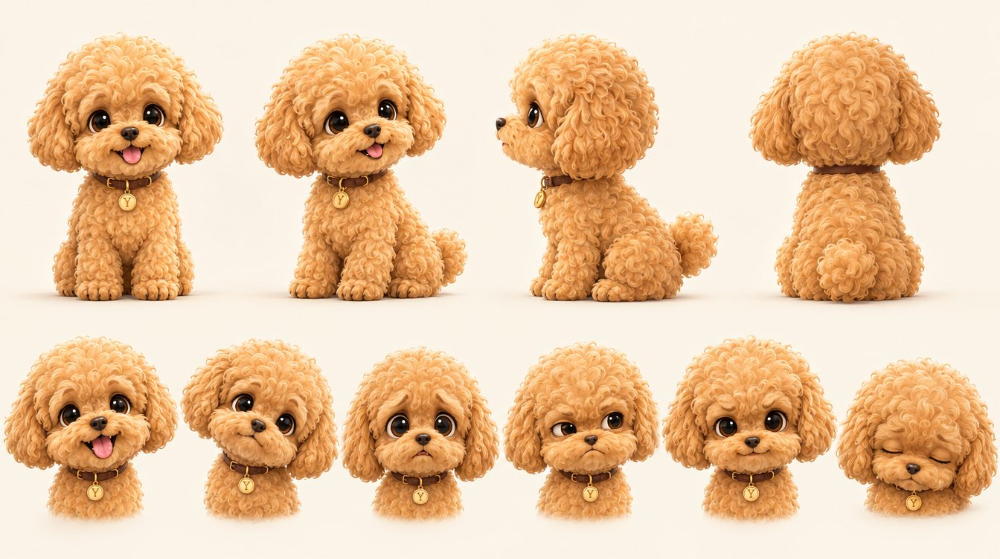

Йонг
Прилетела из Сеула под именем Херра. Женя назвала её Йонг — по-корейски «дракон». Эмоциональная, любопытная, иногда ревнивая, но очень добрая. Мир для неё огромен, поэтому каждое открытие становится приключением.
«Я не слабая. Я просто… компактная».
Как играть: хвост живёт своей жизнью и выдаёт все чувства. Уши — главный индикатор страха. Камера чаще на уровне её глаз, чтобы мир казался большим.